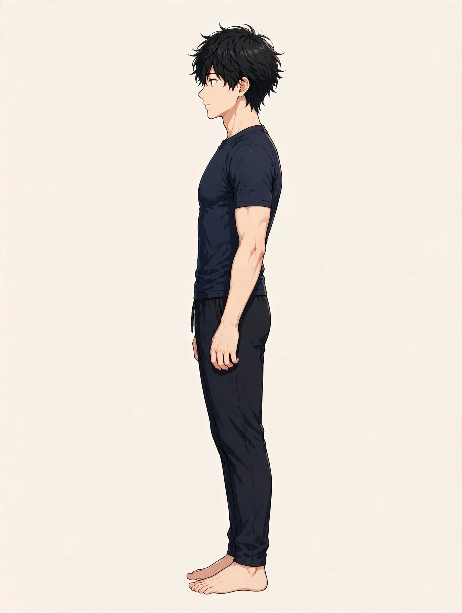
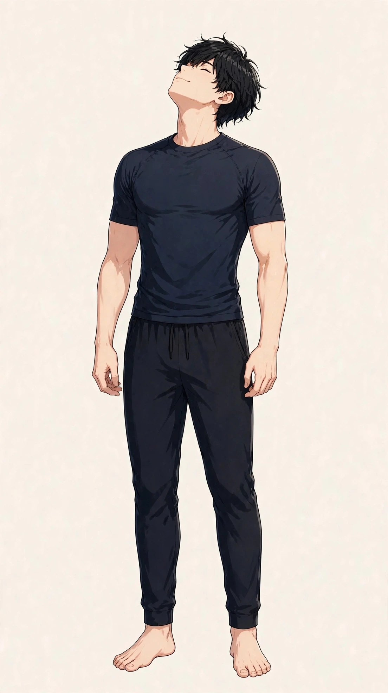

専門家の知識で読み解く首こりのケア ｜ 東三国・新大阪
首こり・頸部痛でお悩みの方へ東三国・新大阪の男性専用整体院 北辰堂

初回60分 2,000円（税込）からLINEで予約する
首が回しにくい、付け根が常に張っている、上を向くと首の後ろがつまる——。首こり・頸部痛は、肩こりと並んでデスクワークの男性に多い相談です。首は頭の重さを支えながら、目や耳の動きに合わせて細かく動く部位でもあり、負担が集中しやすい構造をしています。
このページでは、頸椎の構造から首こりの仕組みを整理し、関係する筋肉、東洋医学の考え方とツボ、施術の考え方、セルフケア、受診の目安をまとめました。一般的な健康情報としてお読みください。
① 首こり・頸部痛とは
頸椎は7つの椎骨が緩やかな前弯（前に凸のカーブ）を描いて重なり、約5〜6kgとされる頭の重さを分散して支えています。椎骨と椎骨の間には椎間板があり、クッションの役割を果たします。首の動きは「うなずく」「振り向く」「横に倒す」など複合的で、その動きを担うのが頭板状筋・胸鎖乳突筋・斜角筋・後頭下筋群といった大小の筋肉です。
首の後ろ側にある頭板状筋は、頭を後ろへ倒したり振り向かせたりする筋肉で、うつむき姿勢では頭が落ち込まないよう支え続けます。首の前側・側面にある斜角筋は、首を横に倒すほか、呼吸の補助にも関わる筋肉です。これらの筋肉が同じ姿勢のまま働き続けると、巡りが滞って張りや痛みとして感じられると考えられています。
首には神経や血管も多く通っているため、不調の出方は張りだけにとどまりません。腕や手のしびれを伴う場合は、筋肉の問題だけでは説明できないこともあります。首こりと一言で言っても背景はさまざまで、状態の見極めが大切な部位です。

頭板状筋は首の後ろから後頭部につながり、頭を支える中心的な筋肉です。頸椎は7つの椎骨がカーブを描いて重なっています。位置は目安です。
ここからは、首こりに関係する筋肉を一つずつ取り上げ、どこにつき（付着部）、どんな働きをし、負担がかかるとどう感じやすいかを整理します。ご自身の張りの中心がどこにあるかを見分ける手がかりにしてください。
筋肉別に見る1：胸鎖乳突筋（首の前側）
胸鎖乳突筋は、耳の後ろの骨（乳様突起）から、胸骨の上端と鎖骨の内側へ斜めに走る、首の前側を代表する筋肉です。片側が働くと顔を反対側へ回し、両側が働くと首を前に倒します。頭が前に出た姿勢では、頭の位置を保つためにこの筋肉も働き続けます。首の前側から側面にかけてのつっぱり感や、振り向いたときの引っかかり感として感じられることがあります。図4に、前面・側面から見た胸鎖乳突筋と斜角筋の位置と走行を示します。


胸鎖乳突筋は耳の後ろから胸骨・鎖骨へ、斜角筋は頸椎から第1・第2肋骨へつながります。
筋肉別に見る2：斜角筋（首の側面の深層）
斜角筋は、頸椎の横の出っ張り（横突起）から第1・第2肋骨へつながる、前・中・後の3つからなる筋肉の集まりです。首を横に倒す働きのほか、肋骨を引き上げて呼吸を助ける働きも担います。首の側面の深い位置にあり、その近くを腕へ向かう神経や血管が通るため、このあたりの緊張が続くと、首から肩、腕にかけての重さやしびれ感と関係する場合があるとされます。デスクワークで肩が上がった姿勢が続くと負担がかかりやすい場所です（図4）。
筋肉別に見る3：僧帽筋の上部と肩甲挙筋（首と肩の境目）
僧帽筋の上部は、後頭部と首の付け根から肩先へ広がり、肩甲骨を引き上げる働きを担います。その深層にある肩甲挙筋は、頸椎の上の方から肩甲骨の内側の上角へ斜めに走り、肩甲骨を引き上げ、首を横に倒したり後ろへ反らしたりする動きに関わります。肩をすくめる癖や、うつむき姿勢の持続で負担が集まりやすく、首の付け根から肩甲骨の内側にかけての「奥の張り」として感じられることが多い組み合わせです。首こりと肩こりがセットで感じられる背景には、この境目の筋肉の負担があります。
筋肉別に見る4：頭板状筋・頸板状筋（首の後ろ）
頭板状筋は、首の下部から胸の上部の背骨と靱帯から、後頭部の乳様突起の後ろ側へ斜めに走る筋肉です。両側が働くと首を後ろへ反らし、片側が働くと顔を同じ側へ回します。頸板状筋はその深層で頸椎同士をつなぎ、首の細かい動きを調整します。うつむき姿勢では、落ち込もうとする頭を後ろから支え続けるため負担が集中しやすく、上を向いたときの首の後ろのつまり感や、振り向きにくさと関係します。
筋肉別に見る5：後頭下筋群（後頭部の深層）
後頭下筋群は、後頭骨の下と第1・第2頸椎の間に集まる、小さな筋肉の集まりです。頭の細かい傾きや回旋を調整し、目の動きとも連動して働くとされます。細かい作業に集中して頭の位置を固定し続けると、この小さな筋肉群が働き続けることになり、首の付け根の深い重さや、目の疲れとセットの張りとして感じられやすくなります。図5に、頭板状筋と後頭下筋群の位置関係を示します。
頭板状筋は首の下部から後頭部へ斜めに走り、後頭下筋群は後頭骨の下の深い位置に集まります。位置は目安です。
② 要因の整理
首こりの要因は、姿勢と環境に加え、目の使い方や寝具など多方面にわたります。代表的なものを整理します。
- モニターとの距離と高さ：画面が遠い・低いと、顔を前に突き出す姿勢が固定化します。頭の位置が前に出るほど、首の後ろ側の筋肉への負担は増えていきます。
- スマートフォンの長時間使用：うつむいて画面を見る姿勢では、首の後ろが引き伸ばされながら頭を支える状態が続きます。就寝前の使用は寝つきへの影響もあります。
- 枕の高さと寝姿勢：枕が高すぎると首が前に曲がったまま、低すぎると頭が落ちて首が反ったままになり、どちらも朝の首の張りにつながる場合があります。
- 首まわりの筋力低下：頭を支える筋肉の力が落ちると、同じ姿勢でも負担が集中しやすくなります。運動不足が続く生活では注意したい要因です。
- 目の疲れと集中の持続：細かい作業に集中すると、頭の位置を固定する後頭下筋群が働き続けます。首の付け根の張りと目の疲れは連動しやすい組み合わせです。
- 食いしばり・歯ぎしりの癖：集中時や就寝中に噛みしめる癖があると、あごから首の前側・側面の筋肉まで緊張が広がり、朝の首の張りにつながる場合があります。
- 緊張と呼吸の浅さ：忙しさやストレスが続くと、無意識に肩が上がり、斜角筋など呼吸を助ける筋肉まで緊張しやすくなります。「忙しい週ほど首が重い」という感覚の背景の一つです。
- 冷えと無意識の力み：冷房や冬の冷気で首元が冷えると、無意識に肩をすくめ首をすぼめる姿勢になり、緊張が抜けにくくなります。


耳の穴・肩の先・骨盤の中央・膝・外くるぶしがおおよそ一直線に並ぶ状態と、頭が前に出た姿勢との違いを示します。位置は目安です。
図6に、側面から見た姿勢ラインの目安を示します。負担の少ない姿勢では、耳の穴・肩の先・骨盤の中央・膝・外くるぶしが、側面から見ておおよそ一直線に並ぶとされます。頭が前に出た姿勢では耳の位置が肩より前へずれ、その分だけ首の後ろ側の筋肉が頭を支える負担が増えます。壁に背中をつけて立ち、後頭部が無理なく壁に触れるかどうかを確認するだけでも、ご自身の頭の位置の傾向に気づけます。
要因は姿勢だけではありません。睡眠不足が続くと筋肉の緊張が抜けにくくなり、同じ負担でも張りを強く感じやすくなります。また、合わない枕や寝具で首の角度が固定されることも、朝の張りを長引かせる要因です。作業環境の項目と、睡眠・体調の両面から振り返ることが、要因の切り分けに役立ちます。
③ セルフチェックリスト
首まわりの状態を振り返るためのチェックです。痛みそのものより、日常の傾向に気づくための目安としてお使いください。
- 朝起きたときから首が張っている
- 上を向くと首の後ろがつまる感じがする
- 振り向くときに首だけでなく体ごと回してしまう
- 仕事の日の夕方に首の付け根が重くなる
- スマートフォンを見た後に首が疲れている
- 枕が合っていない気がしている
- 首を動かすとコリコリ・ゴリゴリという感触がある
- 頭痛や肩こりもセットで感じることが多い
チェックは診断のためのものではありません。腕や手のしびれ、力が入りにくい感覚がある場合は、⑧の受診の目安を優先してください。



①左右へ倒す ②左右へ向く ③上・下を向く。各方向で左右差とつっぱりの場所を確認します。
自分でできるチェック1：首の可動域を確認する
チェックリストで傾向をつかんだら、動きそのものも確認してみましょう。椅子に座り、背筋を伸ばした状態で、①首をゆっくり右・左へ倒し、耳が肩に近づく角度に左右差がないか、②顔を右・左へ向け、あごが肩のラインまで回るか、③上を向いたときと下を向いたときのつっぱりの場所、を確認します。図7に、確認の手順と見るポイントを示します。痛みが走る動きは途中で止め、反動をつけずゆっくり行ってください。左右差が大きい場合や、動かすたびに同じ場所へ痛みが走る場合は、無理に伸ばさず⑧の受診の目安も確認してください。
自分でできるチェック2：圧痛点（押して響く場所）を探す
指の腹で、後頭部の下のくぼみ（風池のあたり）、首の後ろの太い筋肉の外側（天柱のあたり）、肩の上（肩井のあたり）を、左右を比べながらゆっくり押してみましょう。押したときに奥へ響くような感覚がある場所は、緊張が集まりやすい場所の目安になります。首は繊細な部位のため、爪が白くならない程度の弱い圧で十分です。チェックで見つけた場所は、⑥のセルフケアや④のツボ押しで優先的にゆるめる対象になります。ただし、押すと腕へしびれが広がる場合は、その場所への刺激は避けてください。
チェックの結果は、その日のうちにメモしておくと、施術の際に状態を伝える材料にもなります。「いつ・どこが・どの動きで」を一言で残すだけでも十分です。
④ 東洋医学から見た考え方とツボ
東洋医学では、首は頭部と体幹をつなぐ要所で、多くの経絡が通過する場所とされます。後頭部から背中を下る足の太陽膀胱経、側頭部から首の側面を巡る足の少陽胆経、背中の中心を上る督脈が関係し、巡りが滞ると張りや重さとして感じやすくなると考えます。
とくに風池・天柱は、古くから首の付け根の要所として扱われてきたツボです。北辰堂では鍼灸施術は行いませんが、経絡の走行に沿って緊張の分布を確認する視点を施術に取り入れ、ご自宅でできるツボのケアも案内しています。
風池は後頭骨の下のくぼみ、天柱は首の後ろの太い筋肉の外側、大椎は首を前に倒したときに一番出っ張る骨の下にあります。位置は目安です。
ツボ：風池（ふうち）
位置：後頭骨の下縁、首の太い筋肉と耳の後ろから首へ走る筋肉の間にあるくぼみです。
押し方：両手の親指を当て、頭の中心方向へゆっくり圧を加えます。5秒押してゆっくり離す、を3〜5回。首の付け根の重さが気になる日に取り入れやすいツボです。
ツボ：天柱（てんちゅう）
位置：後頭部の髪の生え際、首の中心から指2本分ほど外側にあるくぼみです。
押し方：両手の親指で左右同時に、やや上方向へ押し上げます。首を少し後ろへ倒すと指が入りやすくなります。強く押しすぎず、痛気持ちいい範囲で5秒×3回が目安です。
ツボ：大椎（だいつい）
位置：首を前に倒したときに、首の付け根で最も出っ張る骨（第7頸椎）のすぐ下のくぼみです。
押し方：指の腹でゆっくり円を描くように揉むか、蒸しタオルやカイロ（低温やけどに注意）で温めます。首元を温めることは、冷えによる力みの緩和にもつながります。
ツボ：肩井（けんせい）
位置：首の付け根（うなじの一番出っ張った骨）と肩先の中間点で、肩の最も高い場所にあります。首と肩の境目にあたり、首こりと肩こりをセットで感じる方に使われる代表的なツボです。
押し方：反対側の手の指の腹で、肩の筋肉をつかむようにゆっくり圧を加えます。5秒ほど押してゆっくり離す、を3〜5回。首そのものではなく、肩の上を押すイメージで行ってください。
⑤ 整体・リラクゼーションでの施術の考え方
北辰堂の施術では、首そのものを強く揉んだり、急にひねったりする操作は行いません。首は繊細な部位のため、まず肩甲帯・背中・胸まわりなど土台側の緊張を緩め、首への負担の出どころを減らすことから始めます。そのうえで、頭板状筋や後頭下筋群など首の後ろ側の筋肉へ、指の腹で圧を調整しながらゆっくり働きかけます。
施術中は、首の動く範囲と、動かしたときの感覚を確認しながら進めます。振り向きにくさが「筋肉の張り」から来ているのか、関節の動きの制限なのかによって、対応の組み立ては変わります。あわせて、モニター環境と枕の確認など、日常で負担が集中する場面を整理し、変えられる点をお伝えします。
しびれや力の入りにくさを伴う場合は、施術の対象としてよいか慎重に判断し、医療機関の受診をおすすめすることがあります。首の不調は見極めが大切なため、遠慮なく状態をお知らせください。
北辰堂の施術は、気になる部分だけを見るのではなく、姿勢や骨格の土台と巡りの両方を見ながら、深い圧で奥の張りまでほぐして整えていくのが持ち味です。施術のあとに「体が軽い」「呼吸が深い」と感じていただける状態を目指して組み立てます。
施術の進め方と、途中で確認するポイント
当院の施術は、60分・90分の枠の中で、①その日の状態の確認（張りの中心・首の動く範囲・左右差）、②土台となる肩・背中・胸まわりから緩める、③首の後ろ側の筋肉へ圧を調整しながら穏やかに働きかける、④首の前側・側面とのバランスを整える、という流れで進めます。途中では、振り向きやすさや上を向いたときの感覚の変化を確認しながら進めます。首は繊細な部位のため、強さの希望は遠慮なくお伝えください。「強く揉むほど良い」というものではなく、その日の状態に合った圧で整えていくことを意識しています。
当院では、鍼灸師としての専門知識にもとづき、首こりに関係する筋肉・姿勢・生活習慣の要因を専門家の視点で整理しながら、施術の進め方を組み立てます。
料金
北辰堂の料金は、コースごとに初回と2回目以降の金額を分けてご案内しています。いずれも税込価格で、施術料以外の費用はかかりません。
| コース | 初回（初めての方） | 2回目以降 | 備考 |
|---|---|---|---|
| 整体・リラクゼーション 60分 | 2,000円（税込） | 6,000円（税込） | お支払いは現金のみ |
| 整体・リラクゼーション 90分 | 3,000円（税込） | 9,000円（税込） | お支払いは現金のみ |
初回に含まれること
- 問診：現在の状態や日常の負担、気になる部位をお聞きします。
- 姿勢チェック：姿勢や動きの左右差、肩甲骨の動きを確認します。
- 施術：その日の状態に合わせて、整体・リラクゼーションを行います。
- セルフケアのご案内：ご自宅で続けられるケアの方法をお伝えします。
初回60分 2,000円（税込）からLINEで予約する
⑥ セルフケア
首のセルフケアは「ゆっくり・小さく・痛みの出ない範囲」が原則です。首をぐるぐる大きく回す、強く引っ張るといった動きは避けてください。
頭を横へ倒して首の側面を伸ばします。①背筋を伸ばす ②頭を片側へゆっくり倒す ③反対の肩が上がらないよう意識して15秒保つ、が基本の流れです。
セルフケア1：首の側屈ストレッチ
椅子に座り背筋を伸ばします。頭を片側へゆっくり倒し、反対側の首筋の伸びを感じたら15秒保ちます。手は添えるだけで、強く引っ張りません。左右2回ずつが目安です。しびれや痛みが出る方向には行わないでください。
セルフケア2：あご引き（チンイン）
背筋を伸ばし、目線を水平に保ったまま、あごを水平に後ろへ引くように動かします。二重あごを作るイメージで5秒保ち、ゆっくり戻します。これを5回繰り返します。頭が前に出た姿勢をリセットする基本の動きです。
セルフケア3：首元を温める
蒸しタオルを首の後ろに5分ほど当てる、入浴で首まで湯船に浸かるなど、温める習慣を取り入れます。とくに冷房の効いた場所で過ごした日や、朝の張りが強い日に向いています。
セルフケア4：枕の高さの見直し
仰向けで寝たときに、首の後ろのカーブが自然に支えられ、あごが上がりすぎ・下がりすぎない高さが目安です。バスタオルを折って高さを微調整しながら、数日単位で試してみてください。朝の張りの変化が判断材料になります。
①背筋を伸ばして座る ②顔を片側へゆっくり向ける ③両肩は正面のまま、あごが肩のラインに近づくところで15秒ほど保つ、が基本の流れです。
セルフケア5：振り向きストレッチ
椅子に座り背筋を伸ばし、顔を片側へゆっくり向けます。あごが肩のラインに近づくところで15秒ほど保ち、反対側も同様に行います。図8に手順を示します。肩や体が一緒に回ってしまうと首の伸びが弱くなるため、両肩は正面に向けたまま顔だけを回すのがコツです。しびれや痛みが出る方向には行わないでください。
セルフケア6：肩甲骨の寄せ・下げ
両腕を体の横に垂らし、肩甲骨を背中の中央へ寄せながら、同時にズボンの後ろポケットへ手を入れるような向きで下へ下げる動きを、ゆっくり5回繰り返します。首の付け根から肩甲骨をつなぐ筋肉を使う動きで、頭が前に出た姿勢のリセットに役立ちます。力を入れすぎず、呼吸を止めないで行ってください。
セルフケアの組み立て方
セルフケアは、たくさん行うよりも、毎日続けられる量に絞る方が、結果的に負担の蓄積を抑えやすくなります。目安は、仕事の合間に側屈ストレッチ（セルフケア1）とあご引き（セルフケア2）を1セット、帰宅後は首元を温め（セルフケア3）、入浴後や就寝前に振り向きストレッチ（セルフケア5）と肩甲骨の寄せ・下げ（セルフケア6）を行う流れです。③のチェックで見つけた圧痛点には、④のツボ押しを組み合わせてください。張りが強い日に、無理をして回数を増やす必要はありません。
セルフケアの補足：温める・冷やすの使い分け
温めることが向くのは、冷房や冷えで張りが強まったとき、慢性的な重だるさが続くときです。一方、転倒や事故の直後、熱を持ってズキズキするような感覚があるときは、温めるとかえって不快になる場合があり、そのときは無理に温めず、まず安静にして、必要に応じて医療機関へ相談してください。判断に迷うときは「冷えて固まった感じなら温める」を目安にし、感覚が強まるようなら中止してください。
動画で見るセルフケア
このページのセルフケアは、動画でも紹介しています。動きの流れを確認しながら、無理のない範囲でどうぞ。
⑦ 場面別の注意
- デスクワーク中：画面との距離は腕を伸ばした先が目安です。近づきすぎ・遠すぎはどちらも頭の前出につながります。1時間に一度は席を立ち、首を小さく左右に倒してリセットしてください。
- スマートフォン使用時：画面を目の高さに近づける、長時間続けない、の2点が基本です。寝転んでの使用は首への負担が大きくなるため控えめに。
- 車の運転時：ヘッドレストの位置を後頭部が触れる高さに調整し、渋滞では首を小さく動かして同じ姿勢を区切ります。
- 就寝時：枕だけでなく、うつ伏せ寝が続くと首をひねった姿勢が固定されます。仰向けか横向きで、首に負担の少ない姿勢を試してみてください。
- 在宅ワークの場面：ダイニングのテーブルと椅子では画面が低くなりがちです。ノートパソコンの下に台を置いて画面を上げる、クッションで座面の高さを調整するなど、専用の作業環境に近づける工夫が首の負担を減らします。
- 読書・ゲームの場面：本や携帯ゲーム機をのぞき込む姿勢は、スマートフォンと同様に頭が前に出る場面です。対象を目の高さへ近づけ、長時間続けないよう区切ってください。
⑧ 受診の目安
- 腕や手にしびれがある、細かい作業がしにくくなった
- 手や腕に力が入りにくい、物を落とすことが増えた
- 歩くときにふらつく、足のもつれを感じる
- 転倒や事故（むち打ちなど）の後から痛みが続いている
- 安静にしていても強い痛みが続く、夜痛みで目が覚める
- 発熱や、排尿・排便の変化を伴う
首の不調の背景には、頸椎症や頸椎椎間板ヘルニアなど、医療機関で評価すべき状態があります。とくに手足のしびれや力の入りにくさ、歩行の変化がある場合は、早めに整形外科へ相談してください。
受診先の選び方
受診先に迷う場合は、症状の中心で選ぶのが目安です。しびれや力の入りにくさ、首の動きの制限が中心なら整形外科、今までにない強い頭痛や、ろれつ・見え方の変化を伴う場合は脳神経外科（緊急時は救急）、めまいや耳鳴りを強く伴う場合は耳鼻科も相談先になります。どの科でも、「いつから・どこに・どんな感覚か」「腕のしびれの有無」を伝えられるよう、③のチェック結果をメモしておくと診察が進みやすくなります。
⑨ よくある質問
Q. 首を鳴らす癖があります。続けてもよいですか？
自分で首を強くひねって音を鳴らす行為は、関節やまわりの組織への負担が指摘されています。気持ちよさがあっても習慣化はおすすめしません。張りが気になる場合は、温める・ゆっくりストレッチするといった方法に替えてみてください。
Q. 首こりに強いマッサージは効きますか？
首は神経や血管が集まる繊細な部位です。強い刺激はかえって負担になる場合があります。当院では首へ直接の強い刺激は行わず、土台となる肩・背中から緩めたうえで、首には圧を調整した穏やかな施術を行います。
Q. 枕を変えれば首こりはよくなりますか？
枕の高さが合っていない場合は、見直しが助けになることがあります。ただし首こりの要因は姿勢や作業環境など複合的です。枕だけで判断せず、朝の張りの変化を見ながら、ほかの要因も合わせて整えていくことをおすすめします。
Q. しびれがあっても施術を受けられますか？
しびれの背景によっては、施術より先に医療機関での評価が必要です。ご予約時にLINEでしびれの範囲や経過をお知らせください。状態によっては受診をおすすめし、施術をお断りする場合があります。
Q. ストレートネックと言われました。首こりと関係ありますか？
関係すると考えられています。頸椎の前弯が少ない状態では、頭の位置が前に出やすくなり、首の後ろ側の筋肉が頭を支える負担が増えやすいとされます。ただし、画像の見た目だけで今の張りの原因が決まるものではありません。当院では姿勢チェックで頭の位置と首の動きを確認しながら、施術の進め方を組み立てます。
Q. どのくらいの頻度で通えばよいですか？
状態や生活環境によって異なるため、一律の頻度はお約束していません。初回に体の状態と日常の負担を確認し、セルフケアで対応できる部分と、施術で見ていく部分を分けてご提案します。無理な継続の勧誘は行いません。
Q. 初回は本当に2,000円ですか？追加でかかる費用はありますか？
はい。60分コースの初回は2,000円（税込）、90分コースの初回は3,000円（税込）です。施術料以外の費用はかかりません。お支払いは現金のみとなります。
Q. 2回目以降はいくらですか？
60分コースは6,000円（税込）、90分コースは9,000円（税込）です。料金は「料金」の節と料金・メニューページにもご案内しています。
首こりと間違えやすい症状との違い
首まわりの不調は、すべてが同じ「首こり」とは限りません。感じている場所と、しびれや動きの制限の有無によって、関係する部位が変わります。代表的なものを整理します。切り分けは診断ではありませんが、ケアの選び方と受診先を考える目安になります。
頸椎椎間板ヘルニアとの違い
頸椎椎間板ヘルニアは、椎間板が飛び出して神経に触れることで、首の痛みに加えて腕や手へのしびれ・痛み、力の入りにくさが出る状態です。首こりは筋肉の張りや重さが中心で、しびれを伴わないことが多い点が違いです。しびれや力の入りにくさがある場合は、首こりのケアで様子を見るのではなく、整形外科への相談を優先してください。詳しくは頸椎椎間板ヘルニアのページをご覧ください。
ストレートネックとの関係
ストレートネックは、頸椎の緩やかな前弯が少なくなり、まっすぐに近づいた状態を指す言葉です。頭の位置が前に出やすくなるため、首の後ろ側の筋肉が頭を支える負担は増えやすいとされます。ただし、画像でストレートネックと言われたことと、今の張りの強さがそのまま結びつくわけではありません。姿勢と筋肉の状態をあわせて見ていくことが大切です。詳しくはストレートネック（スマホ首）のページをご覧ください。
むちうち（外傷性頸部症候群）との違い
むちうちは、交通事故や転倒などで首に急な力が加わった後に起こる不調の総称です。事故の直後ではなく、数日たってから首の痛みや張り、頭痛、めまいなどが出ることもあります。きっかけが外傷の場合は、通常の首こりとは分けて考え、まず医療機関で評価を受けることが大切です。当院でも、事故後の施術は状態を確認したうえで判断しています。
肩こりとの違い
肩こりは僧帽筋を中心とした、肩から背中にかけての広い範囲の張りや重さが中心です。首こりは首そのものの筋肉や関節まわりの張りが中心で、首を動かしたときのつっぱりとして感じられます。実際には両方が重なっていることも多く、首の付け根の負担が共通の背景になっています。詳しくは肩こりのページをご覧ください。
緊張型頭痛との関係
首こりとセットで出やすい頭痛に、緊張型頭痛があります。首から肩の筋肉の緊張が続くことで、後頭部から頭全体を締めつけるような重さとして感じられると考えられています。「夕方に強くなる」「首の張りと同時に起こる」といったパターンが手がかりです。ただし、今までにない強い頭痛や、日に日に強くなる頭痛がある場合は、まず医療機関へ相談してください。詳しくは緊張型頭痛のページをご覧ください。
北辰堂のご案内
北辰堂は、大阪市淀川区東三国二丁目にある整体院です。男性スタッフ1人で運営しているため、男性専用としています。施術歴30年の平賀伸人（鍼灸師・国家資格）が、整体とリラクゼーションを行います。当院では鍼灸施術は行いません。営業は平日・土曜17:00〜22:00、日曜10:00〜22:00の完全予約制です。料金は60分 初回2,000円／2回目以降6,000円、90分 初回3,000円／2回目以降9,000円で、お支払いは現金のみです。プライバシーへの配慮のため、詳しい住所はご予約確定後にLINEでご案内します。
メニュー・料金は料金・メニューページ、施術者については当院についてをご覧ください。
関連するお悩み
ご予約・ご相談はLINEから
東三国・新大阪・淀川区周辺で、体のケアの相談先をお探しの方は、LINE公式アカウント（北辰堂）からお気軽にご連絡ください。現在の状態をお聞きしたうえで、施術の進め方をご案内します。
初回60分 2,000円（税込）からLINEで予約するさらに学びたい方へ：現場で使われる専門書（PR）
このページのテーマに合わせて選んだ本と、当店の施術でも参考にしている専門書です。


※本ブロックのリンクはAmazonアソシエイト・プログラムおよび楽天アフィリエイトによる広告リンクです。使用感の保証をするものではありません。